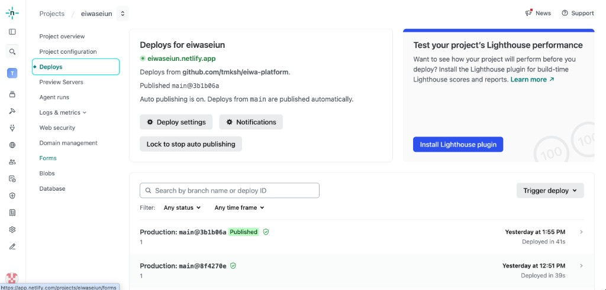
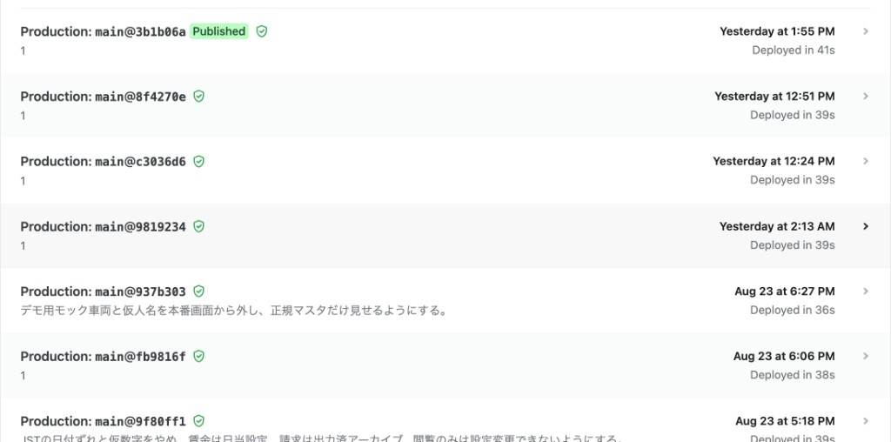
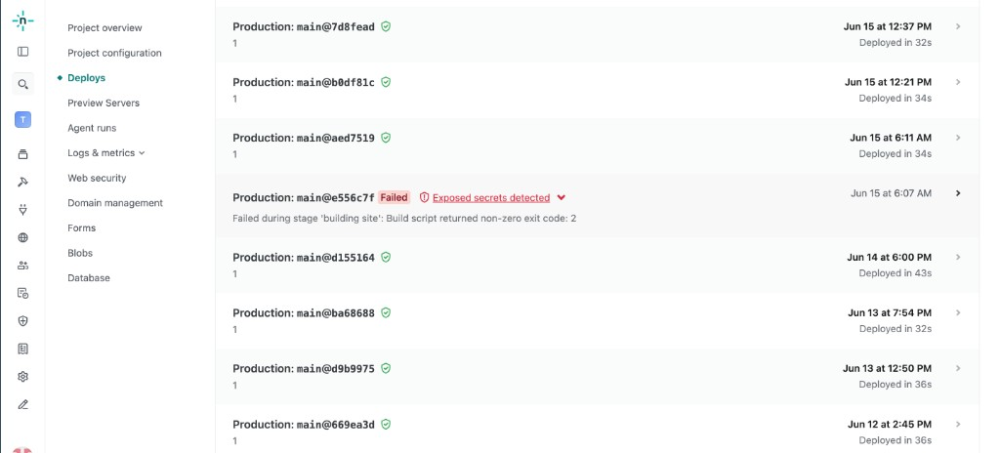
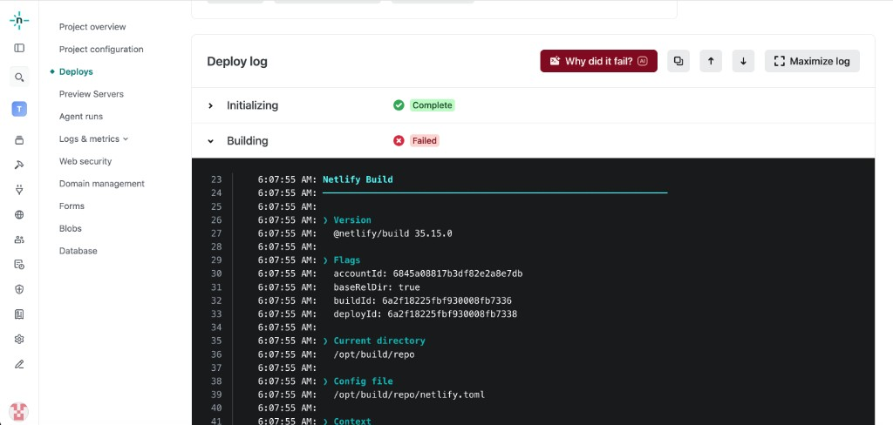
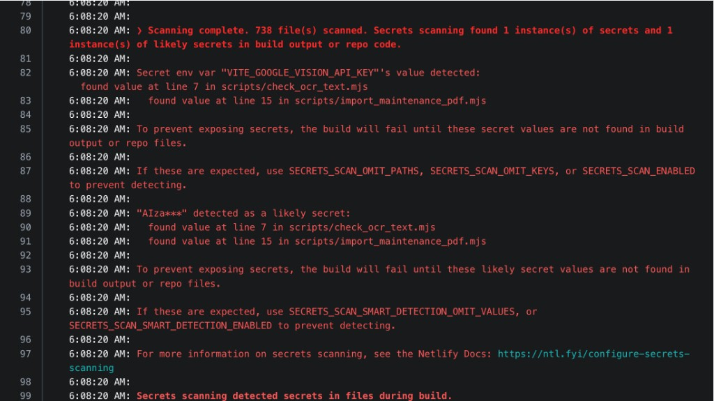
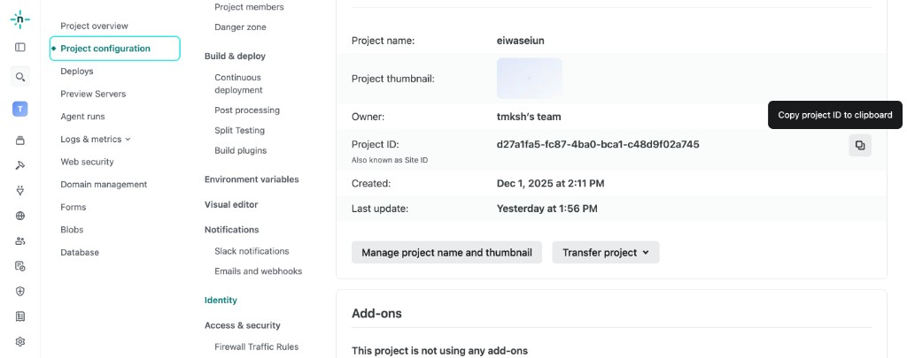
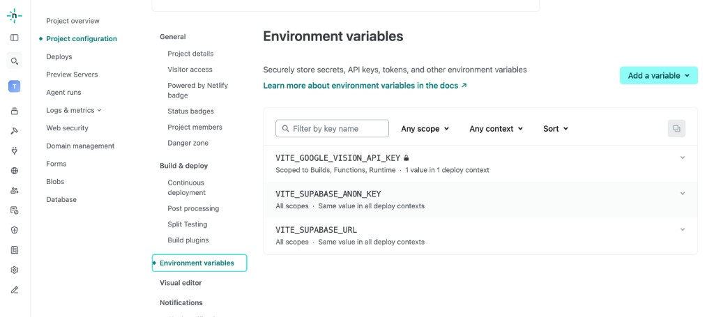

Netlify
Webサイトを公開する場所です。GitHubと連携していて、コードを送ると自動でサイトを更新します。
ひとことで言うと
GitHub にコードをアップすると、Netlifyがそれを見つけて、自動でサイトを作り直して公開します。人が「公開ボタン」を押す作業はありません。
お客様には「サイトが実際に置いてあるサーバーです。更新すると数分で反映されます」と説明します。
反映は即時ではありません。プッシュから公開まで1〜3分ほどかかります。お客様と画面を見ながら直すときは、この待ち時間を先に伝えておきます。
公開までの流れ
- GitHub Desktop で Push origin を押す。
- Netlifyがそれを検知して、自動でビルド（サイトの組み立て）を始める。
- Netlifyの左メニュー Deploys を開く。進行中の行が出る。
- Published と緑のバッジがつけば成功。Failed なら下の手順で直して、もう一度プッシュする。
プッシュしたあとの確認
GitHub Desktop でプッシュしたら、Netlifyの左メニュー Deploys を開きます。一覧のいちばん上が、今送ったものです。

成功したとき
Published と、緑の丸いバッジ（チェック）がついていれば成功です。公開URLを開いて、直した内容が出ているか確認します。

Failed のとき
赤い Failed はエラーです。前回の Published がそのまま公開され続けるので、サイトが真っ白になることはありません。直して、もう一度プッシュします。

- Failed の行をクリックして、Deploy log を開く。
- 赤い Failed のところと、ログの赤い行を画面に収める。
- その部分をスクショする。
- Cursor のチャットにスクショを添付して、「このエラーを直してください」と送る。
- 直してもらったら、もう一度 GitHub Desktop でプッシュする。
- Deploys が Published になるまで、同じ手順を繰り返す。


ログは英語でも、スクショごと渡せば Cursor が読めます。自分で訳さなくて大丈夫です。直したあとにプッシュし忘れると、公開は古いままです。
環境変数（接続キー）
Supabase につなぐ案件では、接続キーをコードではなくNetlify側に設定します。左メニューの Project configuration を開き、その下の Environment variables です。


- キーをコードに直書きすると、GitHubの履歴に残ってしまう
- ここに入れておけば、公開されたサイトからだけ使える
- 設定を変えたら、もう一度デプロイしないと反映されない
「ローカルでは動くのに、公開したらデータだけ出ない」の原因は、ほとんどがこの設定漏れです。
もとに戻したいとき
公開後に問題が見つかったら、Deploys画面から前の状態に戻せます。
- Deploys で、正常だった Published の行を開く。
- Publish deploy を押す。
- 数十秒でその時点の状態に戻る。
戻したあとで、コード側の原因を落ち着いて直します。お客様の業務が止まっているときは、直すより先に戻すのが正解です。
困ったとき
| 起きたこと | どうするか |
|---|---|
| 直したのに変わらない | プッシュ済みか → Deploysが Published か → ブラウザを更新（⌘ + Shift + R） |
| Failed になった | 行をクリック → 赤い部分をスクショ → Cursorに「このエラーを直してください」→ 直したら再度プッシュ |
| データだけ表示されない | 環境変数の設定漏れを疑う |
| 独自ドメインにしたい | Domain management から設定。DNSの切り替えは 05 移行・本番 で扱う |
次に進む合図
- Deploys が Published になっている（Failed なら直して再度プッシュした）
- 公開URLを自分で開いて、反映を目で確認した
- Supabaseを使う案件は、環境変数を設定した